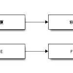

ブロック図作成ツールblockdiag（ERROR: The _imagingft C module is not installedの倒しかた）
ブロック図作成ツールblockdiagとは、テキストファイルから以下のような図を作成してくれるツールである。
{kind=link}
これをFreeBSD にインストールしたので経緯を示す。
環境は10.0-RELEASE-p3、blockdiag-1.3.3である。
必要なもの
lockdiagはpkgに用意されているものの、残念ながら一発インストールというわけにはいかない。
理由は後述。
pkg以外に必要なものは以下の通り。
①ports（portsでインストールが必要なソフトウェアがある）
②日本語フォント（これはpkgでインストールしてよい）
blockdiagのインストール
一部ソフトウェアのportsからのインストールが必要だが、まずはblockdiagをpkgでインストールをしてしまったほうが楽。
依存とかあるからね。
$ pkg search blockdiag py27-blockdiag-1.3.3
インストールしたあとに依存を調べてみると以下の通り。
$ pkg info -d py27-blockdiag-1.3.3 py27-blockdiag-1.3.3: py27-reportlab-3.0_1 python27-2.7.6_4 py27-webcolors-1.4 py27-pillow-2.3.0_2 py27-setuptools27-2.0.1 py27-funcparserlib-0.3.6_1
日本語フォントのインストール
お好みで。
私はVLゴシックを。
$ pkg info|grep ja-font ja-font-vlgothic-20130607 VLGothic Japanese TrueType fonts
さてここからが本題である。
blockdiagの罠: 吊るしのpkgでは日本語フォントを使えない
2014/5/24現在、blockdiagをpkgでインストールした場合、日本語フォントを扱うことができない。
厳密にいえば、TrueTypeフォントを使えない。
日本語を表示させようとすると、以下のように断られてしまう。
$ blockdiag ./sample.txt ERROR: The _imagingft C module is not installed
原因は、FreeBSDにおいて言えばpy27-pillowのせい。
blockdiagが画像を生成する際にはPIL（Python Image Library）を使う。
blockdiagが依存しているpy27-pillowがそれ。
しかしデフォルト設定では、py27-pillowのTrueTypeフォント対応が無効になってるんである。
対応策: py27-pillowだけportsからインストール
ということでpy27-pillowだけportsからインストールする。
/usr/ports/graphics/py-pillowにおいてOption設定を変える。
[vanilla@yaryka /usr/ports/graphics/py-pillow]$ sudo make config ┌───────── py27-pillow-2.3.0_2 ───── │ ┌───────────────────────── │ │ [x] FREETYPE TrueType font rendering support │ │ [x] JPEG JPEG image format support │ │ [ ] LCMS Little Color Management System │ │ [x] PNG PNG image format support │ │ [ ] TIFF TIFF image format support │ │ [ ] WEBP WebP image format support │ └───────────────────────── ├────────────────────────── │ < OK > └──────────────────────────
FREETYPEのところにチェックを入れる。
/var/db/ports/graphics_py-pillow/optionsの中身がこうなってればOK.
$ cat /var/db/ports/graphics_py-pillow/options # This file is auto-generated by 'make config'. # Options for py27-pillow-2.3.0_2 _OPTIONS_READ=py27-pillow-2.3.0_2 _FILE_COMPLETE_OPTIONS_LIST=FREETYPE JPEG LCMS PNG TIFF WEBP OPTIONS_FILE_SET+=FREETYPE OPTIONS_FILE_SET+=JPEG OPTIONS_FILE_UNSET+=LCMS OPTIONS_FILE_SET+=PNG OPTIONS_FILE_UNSET+=TIFF OPTIONS_FILE_UNSET+=WEBP
そしたらpkgのpy27-pillowをいったんアンインストール。
依存があるから強制オプションを付ける。
$ sudo pkg remove -fy py27-pillow-2.3.0_2 pkg: You are trying to delete package(s) which has dependencies that are still required: graphics/py-pillow: print/py-reportlab, graphics/py-seqdiag, graphics/py-blockdiag ... delete these packages anyway in forced mode Deinstallation has been requested for the following 1 packages: py27-pillow-2.3.0_2 The deinstallation will free 2 MB [1/1] Deleting py27-pillow-2.3.0_2... py27-pillow-2.3.0_2 is required by: py27-reportlab-3.0_1 py27-seqdiag-0.9.0 py27-blockdiag-1.3.3, deleting anyway done $
そうしたらportsからpy27-pillowをインストール
[vanilla@yaryka /usr/ports/graphics/py-pillow]$ sudo make install ===> Installing for py27-pillow-2.3.0_2 ===> py27-pillow-2.3.0_2 depends on package: py27-setuptools27>0 - found ===> py27-pillow-2.3.0_2 depends on file: /usr/local/bin/python2.7 - found ===> py27-pillow-2.3.0_2 depends on shared library: libfreetype.so - found ===> py27-pillow-2.3.0_2 depends on shared library: libjpeg.so - found ===> Checking if graphics/py-pillow already installed ===> Registering installation for py27-pillow-2.3.0_2 Installing py27-pillow-2.3.0_2... done [vanilla@yaryka /usr/ports/graphics/py-pillow]$ sudo make clean ===> Cleaning for py27-pillow-2.3.0_2 [vanilla@yaryka /usr/ports/graphics/py-pillow]$
テスト
詳しい記述方法は公式サイトを。
http://blockdiag.com/ja/index.html
テキストファイルに以下のような記述をする。
sample.txtとする。
blockdiag {
春 -> 夏 -> 秋 -> 冬;
A -> E -> F -> G;
}
あとはblockdiagに食わせるだけ。
$ blockdiag sample.txt $
エラーもなくできた。 
そしてできるファイルは以下のようなもの。
{kind=link}
カクカクなのがいやなら、-aをオプションに与えればよい。
$ blockdiag -a ./sample.txt $
以上。